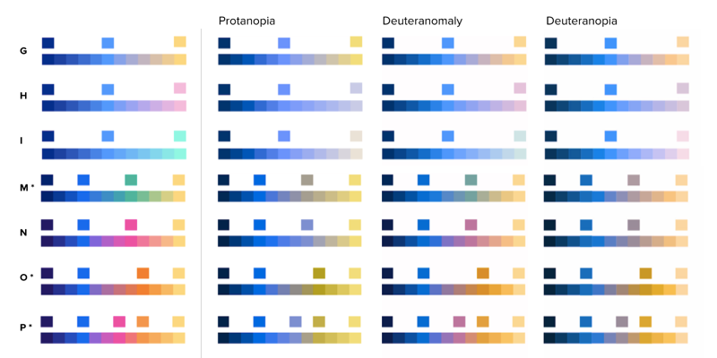
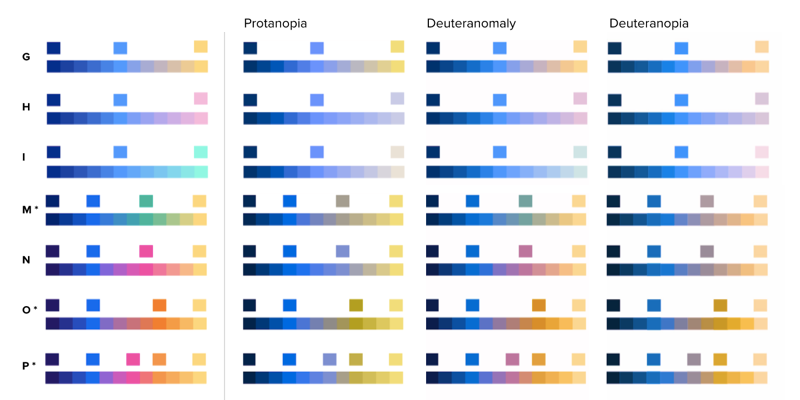

BuzzFeed Analytics Tools
Building analytic tools to empower the organization with data-driven decision

BuzzFeed Analytics Tools
Building analytic tools to empower the organization with data-driven decision
BuzzFeed creates and publishes over 500+ videos, posts, and graphics a week to our owned & operated properties and many social platforms like Facebook or Snapchat. We get data back about how our content connects with our audiences from metrics like pageviews, shares, and retweets. The knowledge held in this data helps us to understand what resonates with them; consequently powers the feedback loop ( Create ➝ Publish ➝ Learn ) for our content creators to make better, more engaging content.

Data plays an integral role in our editorial and advertising strategy. My team Reporting Tools was formed 2 years ago and tasked with this mission:
Empower the organization to make data-driven decisions with a suite of analytic tools built by a dedicated team that are hyper-focused and adaptable to meet the ever-changing needs.
As the sole designer in the Reporting Tools team, I lead the design and execution of all the dashboards, push notifications, and product marketing collaterals. For the last year, I am the product manager in driving the strategy and vision for Audience and Content Insights products.
Typically, a process for each project often goes like this:
Define ⟶ Explore ⟶ Refine ⟶ Promote ⟶ Learn
1 Define the problems by deeply understanding the user and business goals. The methodology and tools for this step include user/stakeholder interview, workflow/product audit, design sprint workshop, worksheets, thought exercises and journey mapping.


2 Explore the solutions in a broad spectrum to validate its viability, feasibility, and usability. With data products, I always prototype with real data to minimize speculative risks, suss out unforeseen uses cases and get actual feedback from our users. I often use a mix of static (paper mocks, click-through screens) and live prototypes (live code, spreadsheet, 3rd party products.)


3 Refine the product and design to achieve the most effective and scalable solution. This is where we examine on the details, interaction and affordance to make the information and interface is intuitive and effective.
To ensure our tools can grow gracefully, I also establish a design system for the dashboard suites which includes the UI architecture, UI pattern, graph components and accessibility-friendly color palettes, which I shared the knowledge with front-end engineers.


 

4 After shipping, we promote and onboard the new product/features to our users in a 3-pronged strategy: in-app promotion (onboarding modal and promotion units), in-context product announcement (Email and flyers) and in-person demo session. For our users in different time zones, we create thorough documentation such user guides, cheatsheets, and FAQs to help them get acquired with our tools on their own.

5 Learn and reflect After launching the product, we closely monitor the usage and solicit users feedback which helps to surface improvement ideas for the next iteration. The team would gather for a retrospective to reflects on how the project went and identifies actions for improvement going forward.

The user problems have evolved quite a bit in the last 2 years. Let’s start from the beginning.
Situation
The demand for data is higher than ever. Our data analysts were drowned by requests from different parts of the company and unable to keep up the demand. For the data consumers, accessing data was tedious. People spent more time hunting down data or cobbling stat from 3rd party tools and spreadsheets than making the analysis. Because of the high friction to access data, many folks gave up and resorted to subjective ways to set goals and make tactical decisions. There was no consistent way to measure content success that actually helps drive impact to the company.
Objective
Making the most essential datasets accessible in an easy-to-use and clear hierarchical design.
Solution
The content insights dashboards addressed those pain points by providing key metrics for a given piece of content. Given the high volume of data for content insights, the design goal for those products is to focus on efficiency and clarify. The table-based design powered by a set of robust filters, search and sorting, is efficient and flexible for exploring the large dataset. Users can look up “What are the most popular videos about Béyonce?” and then drill down to dive into the detail stas.

List view returns a table of content based on selected paramenters such as time range, platform location, creators, content type, language, etc.

Detail view is a "dive-deep" into a piece of content with granular metrics.
üôÖ Failed first attempt The first dashboard we built, known as the Content List, was based on an assumption that a one-size-fill-all product would satisfy everyone‚Äôs needs. The generalized dashboard is too confusing for non-data savvy folks and too simplistic for power users. The unclear use case along with the unforeseen engineering challenge forced us to kill the dashboard shortly after its completion. Since then, our team learned to be critical of product decisions and evaluated every project by the user impact and team effort before design and development.

Situation
As finding data about an individual piece of content became easier, our users started to wonder which insights are noteworthy and actionable: Is a 100K number of shares for a food video good or exceptional compared to the historical data? Which content shows an early signs of going viral? What are the important "signal" we should act on and go after the success?" With noteworthy signal, the content distribution team can fuel the viral content further by distributing to other platforms, channels or countries, and our content creation team can learn from successful content and get motivated to try with new ideas.
Objective
Surface noteworthy insights in real-time about outstanding and trending content to help our editorial team to capitalize their success further.
Solution
Create features and products that highlight exceptional and trending content in a strong visual way:

99 badges are the reward icons given to content that broke high benchmarks of certain metric. The strong visual icons are a key identifier that are implemented across different slack notifications and dashboards.

Trending Videos is a visual hall-of-fame for videos that have the highest velocity in Shares and Views growth. The treemap helps users to grasp the fastest growing content based on the size of the image.
Situation
Most of the exceptional content and viral hits is a result of experimentation. However, discovering and tracking a group of content based on a topic, tag or intent remained very difficult. Editorial leads often resorted to a manual process to log the data into a spreadsheet and aggregate the result.
Objective
Facilitate the ideation and experimentation process by providing toolings to make tagging, searching and learning a grouping of content easier.
Solution
Create tools to help users to ideate and track experiment and through content discovery (Search), custom tagging (Experiment) and content intent analysis. (Jobs)

Search is a content discovery tool of the 3+ millions of videos, graphics, and posts in the catalog, so people can draw inspiration from all the green-tea dessert videos we have made in the past.

Experiment is a workflow tool for creating and applying custom tags to a group of content.

Cultural Cartography visualization is an experimental project to group content based on intent (Make me laugh, Aspiring) and "job-to-be-done".

Job chrome-extension allows content creator to tag any content with Content Jobs.
Situation
Despite easy access to data and detect outliers, our editorial leaders have a hard time tracking the overall health and long-term trends of our core distribution platforms, like BuzzFeed’s owned and operated and Facebook. As the audience’s media consumption and the distributed platform is evolving quite a bit in the past year, able to optimize our content outputs to maximize the returns in audience engagement becomes critical to our business.
Objective
Help our editorial management to monitor the health of the core distribution platforms by tracking the output and performance trends over time
Solution
Develop a health platform dashboard for Facebook and O&O, our two main distribution platforms. The dashboard consists of time-series graphs that show content output and the key metrics side-by-side. Most of the metrics have a strong correlation where the changes in one metric could reveal the changes in another. One of the novels features is pinning, which let users click and mark any date across all graphs so the user can compare the changes of those metrics across the same point in time.


While those big initiatives were happening, our team was also gradually expanding the dashboard suite by increasing our data coverage for the entire organization. Today, the dashboard suite, known as El Dashboard, has grown into a suite of 12 dashboards and evolved into four categories of tools: Content insights, Signal, Discovery & Experiment, and Platform Health.


Role: Design Lead & product manager. Team: 5 engineers, 4 data scientists, 1 product manager, 1 product support.